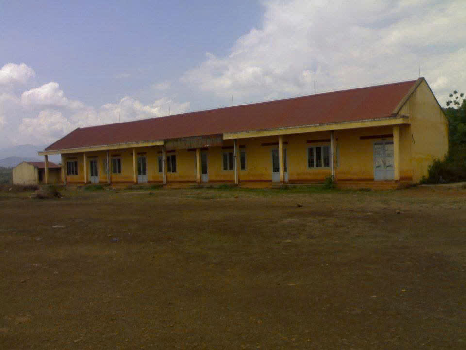
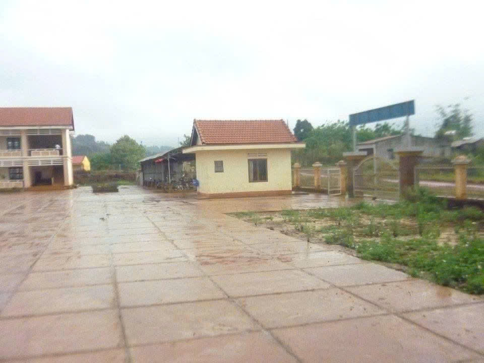
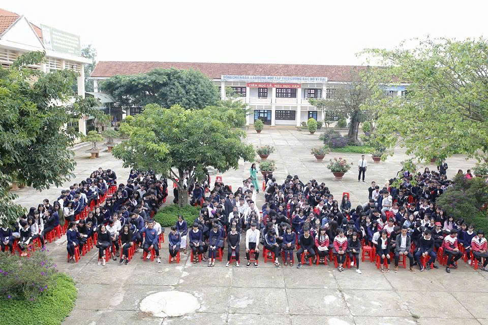
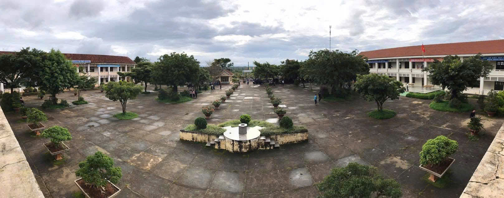
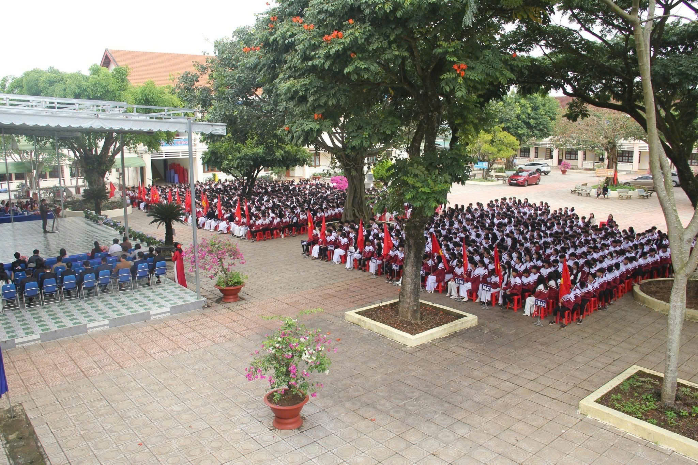

Thư ngỏ
Kính gửi quý thầy cô, phụ huynh, các thế hệ học sinh và
toàn thể cộng đồng Trường THPT Huỳnh Thúc Kháng – Lâm Hà,
Trường THPT Huỳnh Thúc Kháng – Lâm Hà là một trong những ngôi
trường giàu truyền thống dạy và học của tỉnh Lâm Đồng. Trường
mang tên nhà chí sĩ yêu nước Huỳnh Thúc Kháng – biểu tượng cho
tinh thần tự học, lòng yêu nước và ý chí vươn lên không
ngừng.
Được thành lập năm 2006, trong bối cảnh giáo dục Lâm Đồng phát
triển mạnh mẽ nhằm đáp ứng nhu cầu học tập ngày càng tăng, nhà
trường đã từng bước vượt qua khó khăn về cơ sở vật chất, đội ngũ
và trang thiết bị. Trải qua nhiều năm xây dựng và trưởng thành,
Huỳnh Thúc Kháng không chỉ là nơi học tập, mà còn là mái nhà thứ
hai của hàng nghìn thế hệ học sinh – nơi ươm mầm ước mơ, khát
vọng và nhân cách tốt đẹp.
Nhà trường trân trọng cảm ơn đội ngũ cán bộ, giáo viên trẻ,
nhiệt huyết và tận tâm – những người không chỉ dạy kiến thức mà
còn truyền cảm hứng, hướng dẫn học sinh rèn luyện kỹ năng sống,
hình thành nhân cách và ý thức trách nhiệm. Đồng thời, xin cảm
ơn quý phụ huynh và cộng đồng đã luôn tin tưởng, đồng hành trên
từng bước phát triển của nhà trường.
Nhân dịp kỷ niệm 20 năm thành lập, kính mời quý vị cùng nhìn lại
hành trình đáng tự hào ấy qua những hình ảnh, câu chuyện và dấu
mốc đáng nhớ. Mong rằng mỗi người từng gắn bó với Huỳnh Thúc
Kháng – Lâm Hà sẽ tìm thấy một phần ký ức thân thương và thêm
niềm tin để cùng nhà trường bước tiếp vững vàng trong tương
lai.
Trân trọng,
Tập thể Trường THPT Huỳnh Thúc Kháng – Lâm
Hà

Hành trình 20 năm – Những dấu mốc đáng nhớ
Thành lập trường
Năm 2006, Trường THPT Huỳnh Thúc Kháng – Lâm Hà chính thức được thành lập. Từ những lớp học đầu tiên với nhiều khó khăn, nhà trường đã đặt nền móng cho một hành trình giáo dục bền bỉ và đầy hy vọng.
Những bước tiến đầu tiên
Phong trào “Dạy tốt – Học tốt” lan tỏa mạnh mẽ. Nhiều thế hệ học sinh bắt đầu đạt thành tích cao tại các kỳ thi học sinh giỏi, tạo dấu ấn trong hệ thống giáo dục của tỉnh.
Mở rộng cơ sở vật chất
Không gian học tập ngày càng khang trang, xanh – sạch – đẹp. Nhà trường chú trọng môi trường giáo dục thân thiện, kỷ luật và nhân văn cho học sinh.
Chuyển đổi số & đổi mới
Nhà trường đẩy mạnh ứng dụng CNTT trong dạy học và quản lý. Các hoạt động STEM, ngoại khóa sáng tạo giúp học sinh tự tin hội nhập.
Dấu ấn Quốc gia
Năm 2025, học sinh nhà trường đạt giải tại Cuộc thi Vô địch Tin học Văn phòng cấp Quốc gia và giành Huy chương Bạc tại Hội khỏe Phù Đổng toàn quốc – minh chứng cho khát vọng vươn lên của tuổi trẻ Lâm Hà.
Kỷ niệm 20 năm thành lập
20 năm là dịp tri ân quá khứ, tự hào hiện tại và hướng tới tương lai. Huỳnh Thúc Kháng – Lâm Hà tiếp tục bền bỉ phát triển theo hướng hiện đại, lấy học sinh làm trung tâm.
Album ảnh kỷ niệm
Thành tích & Vinh danh
| Năm | Thành tích | Học sinh tiêu biểu | Ghi chú |
|---|---|---|---|
| 2023–2024 | Kết quả tốt nghiệp THPT đạt mức cao | Học sinh toàn trường | Nhiều năm nằm trong Top 10 Lâm Đồng |
| 2025 | Giải Khuyến khích Vô địch Tin học Văn phòng Quốc gia | Đinh Ngọc Bảo An (11A1) | Khen thưởng ngày 16/9/2025 |
| 2025 | Giải Khuyến khích Vô địch Tin học Văn phòng Quốc gia | Nguyễn Đoàn Mạnh Quyền (11A1) | Khen thưởng ngày 16/9/2025 |
| 2025 | Huy chương Bạc Hội khỏe Phù Đổng toàn quốc | Lương Thị Thảo Nguyên (12A2) | Thành tích thể thao cấp Quốc gia |
| 2025 | Huy chương Bạc Hội khỏe Phù Đổng toàn quốc | Nguyễn Hoàng Yến Nhi (12A2) | Thành tích thể thao cấp Quốc gia |
Infographic: 20 năm – Những con số ấn tượng
Video & Ký ức